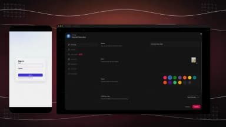

用了半年 Taskade 才发现的 4 个隐藏功能——原来它藏着一整套企业级暗门
以为 Taskade 只是 AI 驱动的待办清单？这篇文章挖了四个官方不怎么宣传的隐藏功能：邮件触发自动化、自带完整用户体系、项目级细粒度权限、手动发布开关，每一个都能直接省下几百块 SaaS 订阅费。
我之前一直把 Taskade 当"AI 版 Todoist"用。安装包从taskade下载拿，它的taskade官网上也明确写着自己是 AI 原生工作空间——不过我当时没太在意那段自我介绍，建几个 Project、挂个 Agent 当助理、偶尔手动触发一条 Automation 就用起来了。直到上周翻设置翻到凌晨两点，才发现它藏着好几个官方文档不怎么宣传、但用起来直接省掉第三方工具的暗门。
说"暗门"真不夸张——这些功能要么埋在 Settings 的二级菜单里，要么挂在 Genesis 应用的高级选项卡下，不主动找根本看不到。而且每一个都解决了我之前用 Zapier + Clerk + Notion 组合才能搞定的事。
这篇把四个最有价值的挖出来，都是我实测过跑通的。
暗门一：给它发封邮件就能触发 Automation——Mailhook 藏得真深
这个是我最震撼的发现。Taskade 在 Automations 触发器里提供了一个叫做 Mailhook 的选项——每建一个 Automation，它都会给你生成一个专属邮件地址，你往这个地址发邮件，Automation 就自动跑起来。
具体路径：新建 Automation → 触发器选 Mailhook → 它会显示一个类似 automation-xxxxx@taskade-mail.com 的地址。
邮件进来之后，Automation 自动做两件事：
- 把附件存到 Taskade 的 Media Files
- 把邮件主题、正文、发件人作为变量传给下一步动作
我当时第一反应是"这能干啥"，然后秒懂了三个场景：
客户发邮件 → 自动建工单。在 Genesis 应用里建一个工单系统，Automation 触发器是 Mailhook，动作链是：解析邮件正文 → 在 CRM Project 里创建一条记录 → 调用一个工单分配 Agent → 给客户发确认邮件。客户完全不需要进 Taskade，就用自己的邮箱发一封就行。这比 Typeform 表单 + Zapier 省事得多，而且附件直接进了 Taskade，不用再单独传。
扫描件归档。我有个自动化流程是：用手机扫描 App 拍个纸质合同 → 分享到那个 Mailhook 地址 → Automation 自动把附件重命名为"合同-日期-客户名"格式 → 存到指定 Project 的 Media Files 里 → 发一条 Slack 消息提醒我。整个流程零手动操作。
定时简报的备选通道。有时候定时调度（Scheduled Workflow）跑不通——比如某个第三方 API 限流了——我就会给自己发一封带 Markdown 简报的邮件到 Mailhook，Automation 照样能解析并分发。相当于给关键流程备了一条冗余通道。
后来去taskade文档翻了一下才看到，它确实有写这个功能，但埋在 Automations 的"高级触发器"章节，而且没有单独的功能介绍页。不翻到那里真看不到。
暗门二：Genesis 应用自带完整的用户系统——不用接 Clerk 或 Auth0
我之前做一个内部工具，为了给用户做登录/注册/忘记密码，专门接了 Clerk，花了两天调 webhook 和角色同步。后来在 Taskade 里搭了个 Genesis 应用，才发现它自带 App User 认证，而且和 Taskade 主账号完全独立。
路径：Genesis 应用设置 → People & Access → App User → 开启 Require Sign-in。
开启之后，你的应用自动拥有：
- 注册/登录/忘记密码页面
- 用户管理面板（查看、禁用、删除）
- 可选的注册域名限制（只允许公司邮箱）
- 用户和 Project 记录关联（实现"客户只看自己的数据"）
这个关联是关键——比如你建一个 CRM 门户，每个客户的 App User 账号和 CRM Project 里的一条客户记录绑在一起。客户登录后，Genesis 自动过滤 Project 视图，只显示属于他的数据。这一层逻辑不用写一行代码，Taskade 在后台帮你做了。
我后来把那个内部工具迁到了 Taskade，Clerk 的订阅直接退了。

暗门三：Project Owner 细粒度权限——Business+ 藏了一个"项目负责人"角色
Taskade 的角色模型默认是四层：Owner、Admin、Member、Guest。Owner 管账单和全局设置，Admin 管成员，Member 正常干活，Guest 只读。
但在 Business 及以上套餐里，你可以给每个 Project 单独指派一个 Owner。这个 Project Owner 不需要是 Workspace 的 Admin 或 Owner——它可以就是一个普通 Member——但他能给这个 Project 设单独的权限策略。
路径：打开某个 Project → 设置（齿轮图标）→ Advanced → Project Owner。
举个实际例子。我现在的 Workspace 里有一个"内容日历"Project，我把它的 Project Owner 指派给了内容负责人小王。小王可以：
- 给这个 Project 设权限策略："只有我和 Admin 能改，其他人只读"
- 调整这个 Project 的视图配置（比如把默认视图改成 Calendar）
- 但他不能邀请新成员进 Workspace、不能改账单、不能动其他 Project
这个粒度是 Notion 和 Asana 默认都做不到的——那些工具要么全局角色，要么整个 Team 的权限。Taskade 在 Workspace 级角色之外叠了一层 Project 级 Owner，相当于给每个项目配了一个"项目经理"，但这个经理不会把全局权限拿走。
对小团队特别友好——不用为了某个项目的负责人去升级 Admin 权限，直接在 Project 里指定就行。
暗门四：Manual Publishing——默认自动发布，但可以切手动防误操作
Genesis 应用有一个我差点踩坑的设计：默认是自动发布。你在 Preview 里改了东西、点了保存，改动立刻对所有访问者生效。
我第一次上线一个客户门户时，在 Preview 里调了一下表单字段的位置，点保存——然后手机上访问门户的客户立刻看到了字段乱序的版本。
后来才发现 Business 及以上可以切到 Manual Publishing。路径：Genesis 设置 → Deployment → Publishing Mode → 选 Manual。
切成手动之后：
- Preview 里的改动存为草稿，不影响线上版本
- 满意了点 Publish 按钮才上线
- 还可以回滚到上一个发布版本
这个开关藏得很深，在 Deployment 设置的最底部，而且官方文档里只提了一句"Business 及以上支持手动发布"。但对做对外客户门户的团队来说，这玩意儿比什么都重要——自动发布适合内部工具，对外的必须要一个发布闸。
一个踩了之后才知道的坑
上面四个都是"发现了就赚了"的功能，但有一个我踩了之后必须提一下：Guest 角色虽然不计费，但给 Guest 开编辑权限是按 Project 逐个开的。
我之前想当然地给 Guest 开了全局编辑——结果发现 Guest 没有"全局"这个概念，他只能操作你在每个 Project 里单独勾选的那些。如果你的 Workspace 有 20 个 Project，你想让 Guest 在其中 5 个里编辑，就得手动去那 5 个 Project 的 Guest 设置里勾一遍。没有"全选"或者"按规则批量开"的入口。
这个设计的出发点是安全——Guest 默认只读，要编辑必须逐 Project 授权。但对有大量 Guest 协作者的团队来说，这个手动成本挺高的。
写在最后
Taskade 这两年从"AI 待办清单"演进到"能构建应用的 AI 平台"，变化很大。但它的暗门才是真正让它和 Notion、Asana 拉开差距的地方——Mailhook 让它能当邮件网关、App User 让它省掉整个认证层、Project Owner 让权限粒度能下探到单个项目、Manual Publishing 让对外发布有了闸。
这些功能官方不怎么宣传，可能是因为 Taskade 还在"从清单工具向平台转型"的阶段，不想让新用户被企业级功能吓退。但如果你已经把它用了一段时间、想让它省掉更多第三方工具订阅——去 Settings 和 Genesis 设置里翻一翻，肯定能挖到更多。我整理的相关资料分别放在了GitHub、Gitee和GitCode，根据你的网络环境挑一个就行。